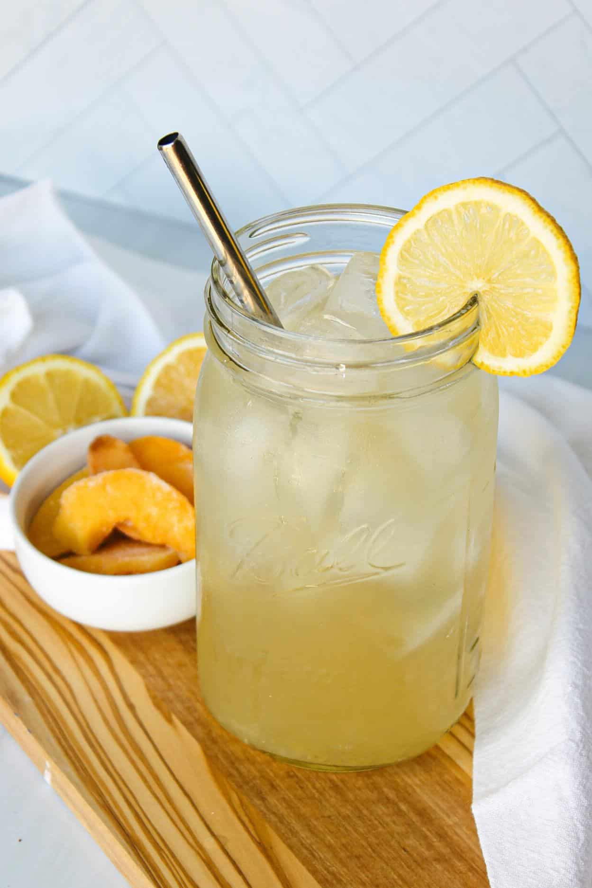
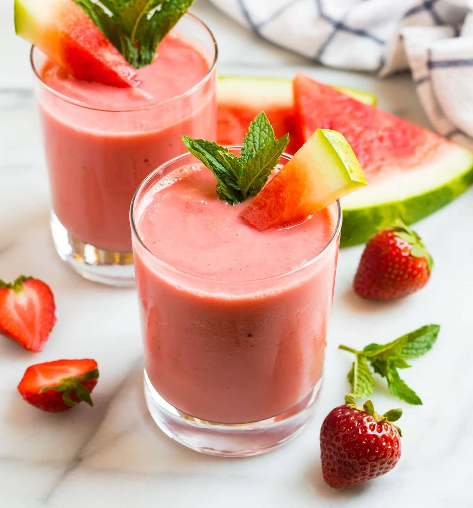

Beverage Recipes
Quench your thirst with these delightful beverage recipes! Explore the refreshing options below:
Recipe 1: Iced Lemonade
Ingredients:
- 1 cup freshly squeezed lemon juice
- 1/2 cup simple syrup (adjust to taste)
- 4 cups cold water
- Ice cubes
- Lemon slices for garnish
- Fresh mint leaves (optional)
Instructions:
- In a pitcher, combine freshly squeezed lemon juice and simple syrup.
- Add cold water and stir well to mix.
- Refrigerate until chilled.
- Serve over ice cubes.
- Garnish with lemon slices and fresh mint leaves if desired.
- Enjoy the cool and tangy goodness of Iced Lemonade!

Recipe 2: Fresh Watermelon Smoothie
Ingredients:
- 2 cups fresh watermelon, diced
- 1/2 cup Greek yogurt
- 1 tablespoon honey (optional)
- 1/2 cup cold water or coconut water
- Ice cubes
- Mint leaves for garnish
Instructions:
- In a blender, combine fresh watermelon, Greek yogurt, honey (if using), and cold water.
- Blend until smooth.
- Add ice cubes and blend again until well combined and slushy.
- Pour into glasses and garnish with mint leaves.
- Enjoy the refreshing taste of Fresh Watermelon Smoothie!

Recipe 3: Iced Coffee
Ingredients:
- 1/2 cup coarsely ground coffee
- 3 cups cold water
- Ice cubes
- Milk or cream (optional)
- Sweetener of choice (optional)
Instructions:
- Place coarsely ground coffee in a jar and add cold water.
- Stir well, cover, and refrigerate overnight (or at least 12 hours).
- Strain the coffee concentrate using a fine-mesh sieve or coffee filter.
- Serve over ice cubes and dilute with water or milk as desired.
- Sweeten if you like and stir well.
- Enjoy the rich and chilled goodness of Iced Coffee!

Check out more exciting pages here: